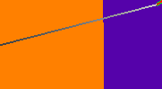
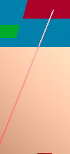
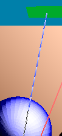
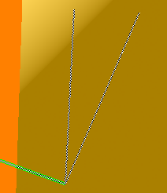

StatsPlotter
A Tool for monitoring the statistics of a live running application. This helps a developer better diagnose and optimize their application.
If you wish to disable stats altogether (for instance, for a release to customers) pass the appropriate attribute to OpenRLCreateContext.
The Interface
When you first start StatsPlotter, if you are not running any OpenRL™ applications, you will see a blank window with two panes. In this state StatsPlotter is looking for an application to attach to. As soon as you run an OpenRL™ application StatsPlotter will automatically attach to it and you will see the left pane get populated with a tree of statistics that are available for monitoring. Expand the tree and check the boxes of stats you are interested in tracking.
As you select stats it will begin plotting their values in the right-hand pane. These stats will be updated every frame. When you quit your app the stats will disappear but when you start it up again the same stats will be registered and plotted automatically. The same stats are remembered across runs of StatsPlotter as well, so you won’t need to re-register them every time you run StatsPlotter.
- RLSL
-
- compile_time
-
The total time spent compiling shaders.
- link_time
-
The total time spent linking programs.
- codegen_time
-
The total time spent generating code (included in frame.prepare_time).
- context
-
- creation_time
-
The total time spent creating the OpenRL context.
- frame
-
- accumulate_count
- accumulates_per_pixel
- accumulates_per_ray
- av_fps
-
The total number of frames rendered throughout the life of the program divided by the total time it took to render each frame (total_time).
- av_rays_per_second
-
The sum of all values of rays_per_second divided by the total number of frames rendered throughout the life of the program.
- dimensions.height
-
The height of the current frame.
- dimensions.width
-
The width of the current frame.
- fps
-
One divided by the time spent in
rlRenderFrame()(total_time). - occlusion_ray_usage
-
Percentage of rays that are occlusion rays.
- output_ray_usage
-
The percentage of declared output rays used this frame. See documentation on the
"setup"shader entry point and rl_OutputRayCount. - pixel_count
-
The width of the current frame multiplied by the height of the current frame.
- pixels_per_second
-
The number of pixels rendered per second.
- prepare_time
-
The time spent in
rlRenderFrame()preparing to begin actual rendering. It can be thought of as time in rlRenderFrame that wasn’t spent rendering. - ray_count
-
The total number of rays emitted in a single frame. ray_size
- rays_per_pixel
-
The total number of rays emitted in a single render divided by the number of pixels in the current frame.
- rays_per_second
-
The number of rays emitted for the current frame divided by the time it took to render that frame (render_time).
- render_time
-
The time in
rlRenderFrame()spent rendering (see prepare_time). - shadow_opaque_hit_rate
-
The percentage of all rays emitted that were shadow opaque hits.
- total_time
-
The total time spent in
rlRenderFrame()(prepare_time + render_time).
- geometry_unit
-
- dynamic_triangle_count
-
The number of triangles processed this frame.
- dynamic_triangles_per_second
-
dynamic_triangle_count/geometry_processing_time
- geometry_processing_time
-
The amount of time spent running vertex shaders and constructing acceleration structures.
- primitive_count
-
The total number of primitives in this frame.
- total_triangle_count
-
The total number of triangles in this frame.
- system
-
- is_hardware_accelerated
-
Returns 1 if hardware is used to accelerate OpenRL.
Profiler
The Profiler is a tool for debugging OpenRL™ programs. It allows you to connect to a running OpenRL™ program and pause it between frames to examine the output.
The most useful feature of Profiler is the ability to click on a pixel in the main viewport and see what rays were emitted for that pixel for those times when you wonder "why is that pixel red?" Tracing pixels is only allowed while the OpenRL™ application under inspection is paused.
If you wish to disable the profiling of your paplication (for instance, for a release to customers),
pass the appropriate attribute to OpenRLCreateContext.
|
Note
|
If you wish to disable profiling of your application pass the appropriate attribute to
OpenRLCreateContext. |
|
Note
|
To get the most out of Profiler you should give your OpenRL™ objects meaningful
names using rlSetPrimitiveString(…), etc. Otherwise they will show up with their
default names which aren’t very helpful as they’re just pointer strings, making it
difficult to extract much meaning from them. |
The Interface
The Profiler consists of a toolbar and six main views which show you the state of the OpenRL™ part of your program: Primitives, Framebuffers, Ray Trees, 3D, Loupe and the Viewport. All of these but the normal Viewport are dockable, so you can rearrange them as you like.
The Toolbar
The toolbar contains only two buttons: Play/Pause and Framestep. After you connect to a running OpenRL program updates will stream to Profiler and the interface will reflect the state of the running program as it updates. Press the "Pause" button to pause the running application to allow you to inspect things more closely. Pixel tracing requires the running application to be paused.
The Framestep button, when pressed, will unpause the OpenRL™ application long enough for it to render exactly one frame. It’s like a "step over" command in a traditional source debugger like GDB. This is very helpful when trying to debug multi-pass programs like the Adaptive Anti-Aliasing sample application included in this SDK. If, when you press "Pause", the application does not stop on the pass of interest you can simply press the Framestep button until you arrive at the pass you are interested in.
Framebuffer
This will show you all attachmed color buffers for the currently active/bound framebuffer object. You can select one of the color buffers and it will be displayed in the viewport view (Lower-right in the image). There is always one extra color buffer ("Rays Per-Pixel") listed that is created by OpenRL™ when the Profiler is attached (i.e. it won’t be there for the first frame after you connect to a running program) that, when selected, will show you a heat map of how many rays are emitted per-pixel.
Viewport and Loupe
The Viewport shows you the contents of the currently selected color buffer from the Framebuffer pane. When the mouse is in this viewport you cursor will become a crosshair and the Loupe pane will show you a magnified view of what your mouse cursor is currently over. Click in the viewport to see what rays were traced through that pixel. If the application is not paused when you click a pixel, then it will be paused for you. The currently selected pixel will be marked by longer crosshairs that extend to the edges of the image.
Ray Trees
This pane will present you with a list of all pixel’s you’ve clicked on this frame and present each one as a tree of rays you can examine. The ray tree you have currently selected will also be selected in the Viewport and Loupe panes as was previously described. If you wish to copy the textual representation of the ray tree to the clipboard just select a row and press cmd/ctrl-C and that whole subtree (or attribute if you have an indicidual ray attribute selected) will be copied to the clipboard. This is useful for comparing ray trees across multiple runs of a program.
3D
This pane shows all the visible geometry of the current frame as well as the rays of the currently selected pixel trace (as selected in the "Ray Trees" pane). Use your mouse to navigate using camera paradigms you may already be familiar with from 3D modeling applications.
The OpenRL Profiler has support for navigating the 3D view using a SpaceNavigator. While the SpaceNavigator is connected you will not be able to navigate with the mouse. You can adjust the sensitivity from the "Spaceball Settings" window accessed from the "Spaceball" menu item.

-
Look/orbit the camera by dragging in the view.
-
Dolly the camera forward and back by holding the spacebar.
-
Adjust the camera’s distance from the orbit focus point by holding "option/alt" and the spacebar.
-
Truck your camera up/down/left/right by holding the "Shift" key.
-
Adjust the scale of the scene by holding "option/alt" and "Shift".
To make ray behavior easier to understand, rays are color-coded with a gradient (to show direction).


Black-to-white rays are normal rays and if they miss they are drawn with a repeating black-to-white gradient (it almost looks dashed). You can see in the image above that the currently selected ray is also drawn with a green outline.
 
If a ray is an occlusion-test ray it is drawn with a red-to-white gradient. Just like the normal ray, the occlusion test ray is drawn with a repeating gradient if it misses. If an occlusion test ray is occluded, it is drawn with a blue-to-white repeating gradient but is still drawn to it’s destination (since we don’t know which object it was occluded by).

When a ray is obscured by geometry is is drawn with a black and white screen-door pattern.
Primitives
This pane shows a list of all primitives in the scene and various statistics about them. The currently selected primitive will be drawn in the 3D pane in a bright green color.